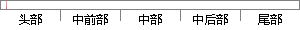

本人郑重声明：所呈交的论文是本人在指导教师指导下独立进行研究工作所取得的成果，论文中有关资料和数据是实事求是的。
片段位置图

相似结果|
相似片段 1： )关于学位论文的独创性声明本人郑重声明：所呈交的论文是本人在指导教师指导下独立进行研究工作所取得的成果，论文中有关资料和数据是实事求是的。尽我所知，除文中已经加以标注和致谢外，本论文不包含其他人已经发表或撰写的研究成果，也
相似片段 2：是本人在指导教师指导下独立进行研究工作所取得的成果，论文中有关资料和数据是实事求是的。尽我所知，除文中已经加以标注和致谢外，本论文不包含其他人已经发表或撰写的研究成果，也不包含本人或他人为获得中国石油大学(华东)或其它教育
相似片段 3：：Prof．LiuYanqinCollegeofArtsChinaUniversityofPetroleum(EastChin )关于学位论文的独创性声明本人郑重声明：所呈交的论文是本人在指导教师指导下独立进行研究工作所取得的成果，论文中有关资料和数据
相似片段 4：是本人在指导教师指导下独立进行研究工作所取得的成果，论文中有关资料和数据是实事求是的。尽我所知，除文中已经加以标注和致谢外，本论文不包含其他人已经发表或撰写的研究成果，也不包含本人或他人为获得中国石油大学(华东)或其它教育机构
相似片段 5：：Prof．XuWanzhiCollegeofArtsChinaUniversityofPetroleum(EastChin )关于学位论文的独创性声明本人郑重声明：所呈交的论文是本人在指导教师指导下独立进行研究工作所取得的成果，论文中有关
相似片段 6：进行研究工作所取得的成果，论文中有关资料和数据是实事求是的。尽我所知，除文中已经加以标注和致谢外，本论文不包含其他人已经发表或撰写的研究成果，也不包含本人或他人为获得中国石油大学(华东)或其它教育机构的学位或学历证书而使
相似片段 7：：Prof．SunChengrongCOLLEGEOFARTSCHINAUNIVERSITYOFPETROLEUM(EastChina)关于学位论文的独创性声明本人郑重声明：所呈交的论文是本人在指导教师指导下独立进行研究工作所取得
相似片段 8：，InvestmentProjectDocuments，FunctionalTheories学位论文原创性声明本人郑重声明：所呈交的学位论文，是本人在导师的指导下，独立进行研究工作所取得的成果。除文中已经注明引用的内容外，本论文不含
|
※ 片段修改建议 ※
近似词参考：- 指导：指点 引导 指示
- 教师：西席
- 独立：自力
- 取得：获得
- 成果：功效 结果
- 实事求是：脚踏实地 量力而行
系统自动生成语句：本人郑重声明：所呈交的论文是本人在指点西席指点下自力进行研究工作所获得的功效，论文中有关资料和数据是脚踏实地的。
注：本片段修改建议为系统自动生成，仅供参考。